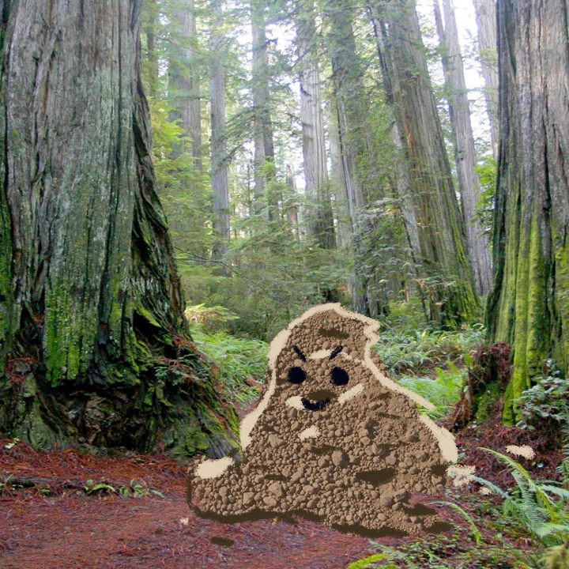

<body>
    

    <button id="dirt" class="hotspot centered cursor-talk" onclick="DirtTalk()"
        style=" left: 67.888%; top: 69.666%; width: 25%; height: 43%" data-turbo="false"></button>

    <a class="hotspot centered cursor-move" href="./80meditation.html"
        style="left: 40.549%; top: 42.955%; width: 19.920%; height: 18.383%;"></a>
<!-- 
    <a-dumpling hidden id="rude" x=40 y=15 width=70 height=40 bodyClass="InvertedFrame">
        <span> u r nerd </span>
    </a-dumpling> -->

</body>

<script type="module">
    window.DirtTalk = function () {
        if (Math.random() < .5) {
            Frames.show('rude')
        } else {
            Frames.show('bully2')
        }
    }
</script>

<s-cript target="dirt" id="dirt" main>
    --- click
      u r nerd
      ==> click
</s-cript>

<s-cript target="assistant">
    --- click
    Not everyone here is kind. Not everyone anywhere is kind.
    ==> click
</s-cript>